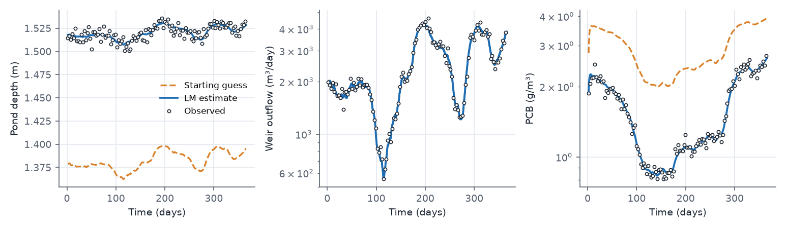
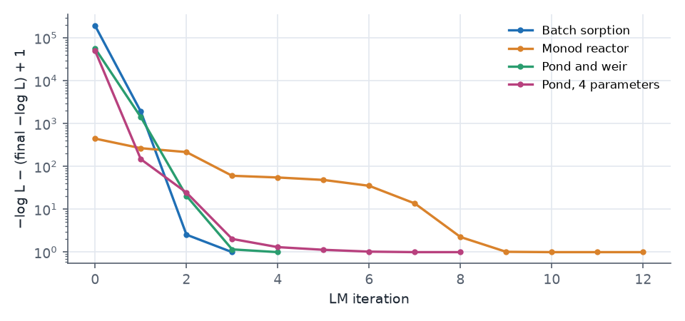
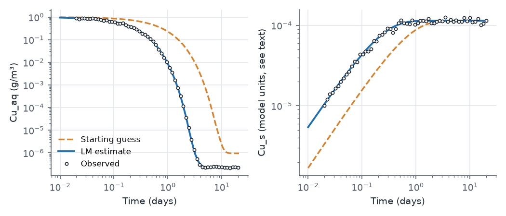
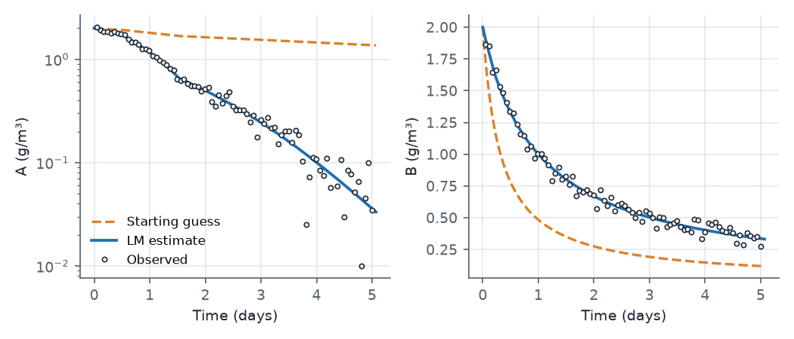
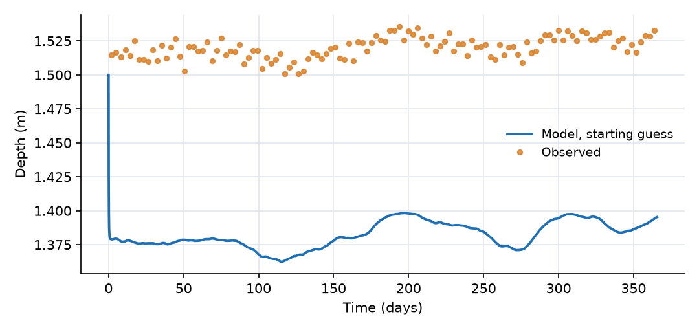
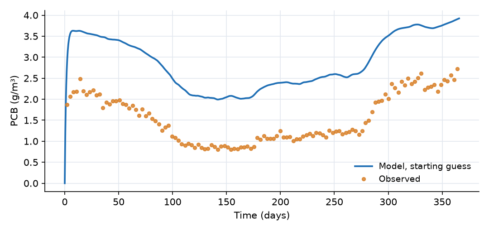

What this model represents
Calibration means choosing parameter values so that a model reproduces measurements, and then saying how well those values are determined. This example contains three small calibration problems that are solved with OpenHydroQual's Levenberg-Marquardt (LM) optimizer. In each one the "observed" data were made by running the model at known parameter values and adding noise of a known size. Because the truth is known, each case can answer two questions that a real calibration never can: did the method recover the right values, and are the uncertainties it reports honest?
| Case | Files | Physics | Calibrated |
|---|---|---|---|
| 1 (main model) | pond_calibration.ohq |
Pond water balance with a weir, first-order decay of a contaminant | weir α, crest elevation, k_d |
| 1b | pond_calibration_4param.ohq |
Same, plus the pond's stage-storage coefficient | 4 parameters |
| 2 | sorption_calibration.ohq |
Kinetic sorption of copper in a closed cell | k_f, KD |
| 3 | monod_calibration.ohq |
Monod and second-order decay, dilution inflow, temperature pulse | k_A, K_s, k_B (+ 2 error SDs, profiled) |
Each case also has an *_at_truth.ohq file, identical except that every parameter holds the value used to make the data. The data were generated with the OpenHydroQual 2.1.1 solver from the *_at_truth.ohq files, with fixed random seeds. The models were built for the OpenHydroQual test suite (Examples/LM_Calibration) and are reproduced here with clearer names. The page shows the pond case; the other files are in the download.
How it works
The likelihood
Every Observation that has observed data contributes a Gaussian negative log-likelihood. For an observation compared at n points, with observed values oᵢ, modeled values mᵢ (interpolated to the observation times) and error standard deviation σ:
−ln L = n · [ MSE / (2σ²) + ln σ ], MSE = (1/n) Σ (oᵢ − mᵢ)²
With error_structure = log-normal the residuals are taken between ln oᵢ and ln mᵢ, so σ is a relative error (0.05 is about 5%). The total objective is the sum over all observations. This is the same number the genetic algorithm (Inverse Run) and MCMC use, so values from the three methods on the same model can be compared directly. Lower is better, and the values are often negative.
Parameters
A Parameter object holds a search range (low, high), a starting value and a prior_distribution. A setasparameter line binds it to a model quantity:
create parameter;type=Parameter,name=p_k_d,low=0.05,high=20,value=0.45,prior_distribution=log-normal
setasparameter; object=k_d, quantity=base_value, parametername=p_k_d
For LM the prior type only selects the search space: log10 for log-normal, linear for normal. The calibrated parameters are given names different from the quantities they drive (p_k_d drives k_d), so that object= and parametername= never refer to two objects with the same name.
What LM computes
LM writes the likelihood as a sum of squares of weighted residuals, rᵢ = (oᵢ − mᵢ)/σ, so that −ln L = ½‖r‖² + n ln σ. Each iteration estimates the Jacobian Jᵢⱼ = ∂rᵢ/∂θⱼ by finite differences (one extra model run per parameter, step fd_step = 0.001 of each parameter's range in its search space) and solves the damped normal equations
(JᵀJ + λ·diag(JᵀJ)) · δ = −Jᵀr
for the step δ. A small damping λ gives a Gauss-Newton step; a large one gives a short steepest-descent step. λ is divided by 3 after a step that lowers the objective and multiplied by 3 after one that does not. Steps that would leave a parameter's range are projected back onto it. LM is a local method: it converges to the optimum nearest the starting values.
At the solution LM recomputes J and reports (JᵀJ)⁻¹ as the parameter covariance. Because the residuals already carry 1/σ, this is a covariance and not only a curvature. It is reported in the search space (for a log-normal parameter the standard error is that of log10 of the value) together with a 95% interval converted back to model units and the correlation matrix.
When a parameter drives an observation's error_standard_deviation, LM does not search for it. At any point the best σ has the closed form σ̂² = MSE, so LM sets it to that value at every iteration ("profiling"). Case 3 uses this.
Case 1: the pond
The pond's depth follows from its storage, depth = [S²/(α_p·(S + 0.1))]^(1/β_p), which is Storage = α_p·depth^β_p for S ≫ 0.1 m³ (α_p = 4140, β_p = 2.2). The water balance is
dS/dt = Q_in(t) − 3000 − α·max(h − z₀, 0)^1.5
with Q_in from pond_inflow.csv and h the depth (the bottom elevation is 0 m). The PCB mass balance is
d(S·C)/dt = 5·Q_in − (3000 + Q_weir)·C − S·k_d·1.05^(T − 20)·C
The three observations constrain different parts of the model. The depth record fixes the stage at which the weir passes the inflow minus the withdrawal, which depends on both α and z₀. The weir discharge record adds the shape of the rating curve. The PCB record constrains k_d, given the residence time set by the hydraulics.
Case 2: batch sorption
A closed groundwater cell (1 m² × 1 m, porosity 0.4, so 0.4 m³ of water) starts with Cu_aq = 1 g/m³ and no sorbed copper. Two reactions exchange copper between the phases:
| Reaction | Rate | ν for Cu_aq | ν for Cu_s |
|---|---|---|---|
| Sorption | k_f·Cu_aq | −1 | +n/ρ |
| Desorption | (k_f/KD)·Cu_s | +1 | −n/ρ |
with n = 0.4 and ρ = 1400. Reaction rates are multiplied by the water volume (Storage) to give mass rates, while Cu_s is a Sorbed_Constituent, whose concentration is its mass divided by the total cell volume. At equilibrium Cu_s/Cu_aq = KD exactly, so k_f is identified by the early decay of Cu_aq and KD by the height of the final plateau, 2.3×10⁻⁷ g/m³. Both observations use a log-normal error model with σ = 0.05. The case sets nr_tolerance = 1e-10: Cu_aq falls through six decades, and at the default tolerance its plateau, which carries all the information about KD, is lost in solver noise.
When this case is run with the console, the solver reports property 'Cu_s:inflow_loading' does not exist in 'Batch_Cell'. The sorbed constituent type has no inflow loading and the cell has no inflow, so the results are not affected, but the console exits with code 4.
Case 3: Monod reactor
A 10 m³ reactor with no outflow holds A and B, both starting at 2 g/m³:
dA/dt = −k_A·1.05^(T − 20)·A/(K_s + A) − (Q_in/V)·A dB/dt = −k_B·B² − (Q_in/V)·B
The inflow of clean water (1 m³/day from t = 0.1 to 0.2 days) dilutes both by about 1%, and the 30 °C period from day 0.5 to 1.5 more than doubles the A rate. The error SDs of both observations are calibrated parameters (sigma_A_conc, sigma_B_conc) and are profiled, so the run reports three free parameters although five are declared.
Running
The downloaded models run unchanged in the interface (press Levenberg-Marquardt calibration) or headless:
OHQ-LM pond_calibration.ohq results/ --threads 4
OHQ-LM pond_calibration.ohq results/ --verify-residuals
The second command solves the model once and checks that ½‖r‖² + Σ n ln σ reproduces the likelihood; it is worth running on any new model. Each run writes LM_output.txt (one row per attempted step and the stop reason) and LM_covariance.txt (estimates, standard errors, intervals and the correlation matrix). A forward run of a *_calibration.ohq file uses the starting values, which is what the plots further down this page show.
What to look for in the results
All results below were produced with OHQ-LM (version 2.1.1, two threads) from the files in the download. All runs start well away from the truth.

| Case | Parameter | Truth | Start | Estimate | 95% interval | Covers truth |
|---|---|---|---|---|---|---|
| 1 | weir α | 794 880 | 400 000 | 774 197 | 622 448 to 962 941 | yes |
| 1 | crest z₀ (m) | 1.5 | 1.35 | 1.4993 | 1.4961 to 1.5024 | yes |
| 1 | k_d (1/day) | 1.2 | 0.45 | 1.2015 | 1.1862 to 1.2171 | yes |
| 2 | k_f (1/day) | 5.0 | 1.5 | 4.989 | 4.972 to 5.005 | yes |
| 2 | KD | 500 | 120 | 498.6 | 485.8 to 511.7 | yes |
| 3 | k_A | 1.0 | 0.35 | 0.972 | 0.908 to 1.039 | yes |
| 3 | K_s (g/m³) | 0.6 | 2.5 | 0.561 | 0.468 to 0.672 | yes |
| 3 | k_B (m³/g/day) | 0.5 | 1.6 | 0.5003 | 0.4889 to 0.5121 | yes |
| 3 | σ_A (g/m³) | 0.0393 | 0.05 | 0.0389 | profiled | |
| 3 | σ_B (g/m³) | 0.0375 | 0.05 | 0.0410 | profiled |
| Case | Residuals | Iterations | Model solves | −ln L at truth | −ln L at estimate |
|---|---|---|---|---|---|
| 1 | 360 | 5 | 30 | −1173.8 | −1174.2 |
| 2 | 120 | 4 | 24 | −285.5 | −286.4 |
| 3 | 160 | 12 | 68 | −434.0 | −435.1 |

- Cost. Each case converges in 4 to 12 iterations and 24 to 68 model solves, between about 5 and 20 s of wall time each. A genetic algorithm with its default 40 × 40 population would need about 1600 solves and would return no uncertainty.
- The estimate fits slightly better than the truth. In every case −ln L at the estimate is a little lower than at the true values. That is expected: the optimizer fits one particular noise realization, and the best fit to noisy data is never exactly the truth.
- Correlated pairs. In the pond case the weir α and the crest elevation are correlated at +0.96. A higher crest and a larger coefficient give nearly the same discharge over the narrow range of stage in the record (1.50 to 1.54 m), so the interval on α is wide (about ±25%) while z₀ is fixed to about ±3 mm. In case 3, k_A and K_s are correlated at +0.985, which is the familiar trade-off in a Monod term; they remain identifiable only because the temperature pulse and the decline of A move the reactor through a range of A/K_s. k_d and k_B are nearly uncorrelated with everything else, because each is constrained by its own observation.
- A pair the data cannot separate (case 1b).
pond_calibration_4param.ohqalso calibrates the pond's stage-storage coefficient α_p. LM needs 9 iterations and 54 model solves, creeping slowly along a valley (see the convergence plot), and ends at α_p = 4188 (truth 4140) and k_d = 1.188 (truth 1.2), with essentially the same −ln L as the three-parameter fit (−1174.25 against −1174.24). The point estimates happen to be good, but the uncertainty tells the real story: the correlation between α_p and k_d is −0.999, and the 95% interval for k_d widens from 1.186 to 1.217 in the three-parameter fit to 0.82 to 1.73. A larger pond holds water longer, and a longer residence time with slower decay produces the same outflow concentration as a smaller pond with faster decay, so the data fix only the combination. With a different noise realization the same run can stop anywhere along that valley; only the correlation matrix and the wide intervals reveal it. Fixing α_p at its known value, as the main model does, makes the other three parameters well determined.


Assumptions and limitations
- The data are synthetic, made with the same model structure that is calibrated. Real data also contain model-structure error, which no optimizer can remove and which usually makes the reported intervals too narrow.
- The residuals are treated as independent. For densely sampled records whose errors are serially correlated, see the AR1 error model example.
- The covariance is the Gauss-Newton approximation at the optimum. It assumes the likelihood is close to quadratic there; it is not meaningful for a parameter sitting on a bound, and it describes only the neighbourhood of the optimum found. For skewed or multi-modal posteriors use MCMC.
- LM is local. From a poor start on a problem with several optima it will converge to the nearest one. Run the genetic algorithm first in that case: it writes its estimates back into the parameters and LM continues from there.
- The weir is a two-parameter power law (β fixed at 1.5), and the withdrawal is a constant 3000 m³/day regardless of storage.
- The two receiving blocks are plain Reactor blocks with a large storage. A
fixed_headblock cannot receive flow in a model with constituents in this version, because the solver evaluates each constituent's inflow loading in every block andfixed_headhas no inflow property.
Model diagram
Hover a block or link to see its name and type. Arrows show the positive flow direction.
Components
Click a component to see every property set in the model file, with units and meaning.
Blocks 3
Storage compartments: each holds water (and dissolved or particulate mass) and has a state that evolves in time.
PondPond · Pond_PluginA stormwater pond whose volume and depth are related by Storage = α·depth^β (α = 4140, β = 2.2). It receives the inflow record and an inflow PCB concentration of 5 g/m³, and starts at 10 102 m³ (depth 1.50 m).
Pond: Stormwater pond
| Property | Value | Unit | Meaning |
|---|---|---|---|
| PCB: Concentration | 0 | g/m3 | Computed as mass/(Storage+0.00001) |
| PCB: Constant Inflow concentration | 5 | g/m3 | |
| Initial Storage | 10101.9 | m3 | Initial volume of water stored in the pond at the beginning of the simulation. |
| The coefficient (α) in the rating curve S = α d^β | 4140 | The coefficient (α) in the pond volume-depth relationship: Storage = alpha * depth^beta. | |
| The exponent (β) in the rating curve S = α d^β | 2.2 | The exponent (β) in the pond volume-depth relationship: Storage = alpha * depth^beta. | |
| Bottom elevation of pond | 0 | m | |
| Inflow rate time series | pond_inflow.csv | m^3/day | The time series containing the inflow rate into the pond |
Withdrawal_SinkReactor · mass_transferReceiving storage for the fixed withdrawal (a 10⁶ m³ Reactor block with no outflow). It only collects water and mass; nothing flows back.
Reactor: Reactor
| Property | Value | Unit | Meaning |
|---|---|---|---|
| PCB: Concentration | 0 | g/m3 | Computed as mass/(Storage+0.00001) |
| Initial Storage | 1000000 | m3 | |
| Bottom elevation | 0 | m | |
| Constant Inflow | 0 | m3/day |
DownstreamReactor · mass_transferReceiving storage for the weir overflow, built the same way as Withdrawal_Sink.
Reactor: Reactor
| Property | Value | Unit | Meaning |
|---|---|---|---|
| PCB: Concentration | 0 | g/m3 | Computed as mass/(Storage+0.00001) |
| Initial Storage | 1000000 | m3 | |
| Bottom elevation | 0 | m | |
| Constant Inflow | 0 | m3/day |
Links 2
Connections that move water (and the mass it carries) between blocks.
WithdrawalFixed flow · mass_transferA constant abstraction of 3000 m³/day from the pond (positive from Pond to Withdrawal_Sink).
Fixed flow: Fixed flow
| Property | Value | Unit | Meaning |
|---|---|---|---|
| Flow rate | 3000 | m3/day |
Weirwier · Pond_PluginOverflow weir with the power-law rating Q = α·max(h − z₀, 0)^β, β = 1.5. Its coefficient α and crest elevation z₀ are calibrated. Flow is always from Pond to Downstream.
wier: Weir based on a power-law rating curve
| Property | Value | Unit | Meaning |
|---|---|---|---|
| Coefficient alpha in Q=alpha*(h-z_0)^beta (SI-day units) | 400000 | ||
| Exponent beta in Q=alpha*(h-z_0)^beta | 1.5 | ||
| Crest Elevation | 1.35 | m |
Constituents 1
Substances or particles carried by the water.
PCBConstituentA dissolved contaminant entering with the inflow and lost by first-order decay in the pond.
Constituent: Chemical constituent
| Property | Value | Unit | Meaning |
|---|---|---|---|
| Concentration | 0 | g/m3 | Computed as mass/(Storage+0.00001) |
| Constant Inflow concentration | 0 | g/m3 | |
| Diffusion Coefficient | 0 | m2/s | |
| Dispersivity | 0 | m | |
| Stoichiometric Constant | 0 |
Reaction parameters 1
Named coefficients used in reaction rate expressions.
k_dReactionParameterFirst-order decay rate of PCB (1/day at 20 °C), corrected with θ = 1.05 using pond_temperature.csv. Its base value is calibrated through p_k_d.
ReactionParameter: Reaction Parameter
| Property | Value | Unit | Meaning |
|---|---|---|---|
| Arrhenius temperature correction factor | 1.05 | ||
| Value | 0.45 | ||
| Reference Temperature | 20 | ||
| Temperature time-series (degrees Celsius) | pond_temperature.csv |
Reactions 1
Transformations among constituents, each with a stoichiometry and a rate expression.
DecayReactionFirst-order removal of PCB, rate k_d·PCB.
Reaction: Chemical reaction
(k_d*PCB)| Constituent | Stoichiometric coefficient |
|---|---|
| PCB | -1 |
Model parameters 3
Quantities flagged for estimation, with their search ranges or priors.
weir_alphaParameterCalibrated weir coefficient. Range 5×10⁴ to 5×10⁶, searched in log10. Start 400 000; the value used to make the data was 794 880.
Parameter: Parameter
| Property | Value | Unit | Meaning |
|---|---|---|---|
| Lower Limit | 50000 | ||
| Upper Limit | 5e+06 | ||
| Value | 400000 | ||
| Prior distribution | log-normal |
crest_elevParameterCalibrated weir crest elevation (m). Range 1 to 2 m, searched linearly. Start 1.35 m; truth 1.5 m.
Parameter: Parameter
| Property | Value | Unit | Meaning |
|---|---|---|---|
| Lower Limit | 1 | ||
| Upper Limit | 2 | ||
| Value | 1.35 | ||
| Prior distribution | normal |
p_k_dParameterCalibrated base value of k_d (1/day). Range 0.05 to 20, searched in log10. Start 0.45; truth 1.2.
Parameter: Parameter
| Property | Value | Unit | Meaning |
|---|---|---|---|
| Lower Limit | 0.05 | ||
| Upper Limit | 20 | ||
| Value | 0.45 | ||
| Prior distribution | log-normal |
Observations 3
Model outputs that are recorded and, when data are supplied, compared with measurements.
pond_depthObservationObservation of the pond water depth (m), compared with pond_obs_depth.csv under a normal error model with a fixed SD of 0.005 m.
Observation: Observation
| Property | Value | Unit | Meaning |
|---|---|---|---|
| Expression | depth | Expression evaluated on the chosen object at each output time step. Typically a single state variable (e.g. 'Storage') or a derived quantity (e.g. 'Storage/Area'). The result becomes the modeled value compared against observed data. | |
| Error probability distribution | normal | Distribution assumed for the residual between modeled and observed values. 'normal' compares values directly; 'log-normal' compares the logs (suitable for strictly positive quantities spanning multiple orders of magnitude, e.g. concentrations or flows). | |
| Error standard deviation | 0.005 | Standard deviation of the residual under the chosen error structure. For 'normal' errors, units match the observed quantity; for 'log-normal' errors, this is the standard deviation of log-residuals. May be set per-observation or pushed in at runtime from a Truth Twin metadata sidecar. | |
| Observed data time series | pond_obs_depth.csv | Measured time series to compare the modeled output against. Used by all comparison methods. May be loaded from a file or pushed in at runtime by an external assimilation driver. |
weir_outflowObservationObservation of the weir discharge (m³/day), compared with pond_obs_weir_flow.csv under a log-normal error model with a fixed SD of 0.05 in natural-log units.
Observation: Observation
| Property | Value | Unit | Meaning |
|---|---|---|---|
| Expression | flow | Expression evaluated on the chosen object at each output time step. Typically a single state variable (e.g. 'Storage') or a derived quantity (e.g. 'Storage/Area'). The result becomes the modeled value compared against observed data. | |
| Error probability distribution | log-normal | Distribution assumed for the residual between modeled and observed values. 'normal' compares values directly; 'log-normal' compares the logs (suitable for strictly positive quantities spanning multiple orders of magnitude, e.g. concentrations or flows). | |
| Error standard deviation | 0.05 | Standard deviation of the residual under the chosen error structure. For 'normal' errors, units match the observed quantity; for 'log-normal' errors, this is the standard deviation of log-residuals. May be set per-observation or pushed in at runtime from a Truth Twin metadata sidecar. | |
| Observed data time series | pond_obs_weir_flow.csv | Measured time series to compare the modeled output against. Used by all comparison methods. May be loaded from a file or pushed in at runtime by an external assimilation driver. |
PCB_concObservationObservation of the PCB concentration in the pond (g/m³), compared with pond_obs_PCB.csv under a log-normal error model with a fixed SD of 0.05.
Observation: Observation
| Property | Value | Unit | Meaning |
|---|---|---|---|
| Expression | PCB:concentration | Expression evaluated on the chosen object at each output time step. Typically a single state variable (e.g. 'Storage') or a derived quantity (e.g. 'Storage/Area'). The result becomes the modeled value compared against observed data. | |
| Error probability distribution | log-normal | Distribution assumed for the residual between modeled and observed values. 'normal' compares values directly; 'log-normal' compares the logs (suitable for strictly positive quantities spanning multiple orders of magnitude, e.g. concentrations or flows). | |
| Error standard deviation | 0.05 | Standard deviation of the residual under the chosen error structure. For 'normal' errors, units match the observed quantity; for 'log-normal' errors, this is the standard deviation of log-residuals. May be set per-observation or pushed in at runtime from a Truth Twin metadata sidecar. | |
| Observed data time series | pond_obs_PCB.csv | Measured time series to compare the modeled output against. Used by all comparison methods. May be loaded from a file or pushed in at runtime by an external assimilation driver. |
Input files
pond_temperature.csv | Daily water temperature (°C) versus time (days), from 5 °C in winter to 35 °C in summer. Drives the temperature correction of k_d. |
pond_inflow.csv | Daily inflow to the pond (m³/day) versus time (days), 3550 to 7250 m³/day over one year. Two columns, no header. |
pond_obs_depth.csv | Synthetic observed pond depth (m), 120 points from day 2 to day 364, with 5 mm Gaussian noise. |
pond_obs_weir_flow.csv | Synthetic observed weir discharge (m³/day), 120 points, with 5% multiplicative (log-normal) noise. |
pond_obs_PCB.csv | Synthetic observed PCB concentration (g/m³), 120 points, with 5% multiplicative noise. |
pond_at_truth.ohq | The pond case with every parameter at the value used to make the data. Scoring it gives the reference likelihood. |
pond_calibration_4param.ohq | The pond case with the stage-storage coefficient α of the pond calibrated as well (start 7000, truth 4140). It shows a correlated, poorly identified pair. |
sorption_calibration.ohq | Case 2. A closed groundwater cell in which dissolved copper (Cu_aq) exchanges with a sorbed phase (Cu_s) by first-order kinetics. Calibrates k_f and KD. |
sorption_at_truth.ohq | Case 2 at the true values (k_f = 5 1/day, KD = 500). |
sorption_obs_Cu_aq.csv | Synthetic Cu_aq observations (g/m³), 60 points log-spaced from 0.02 to 20 days, with 5% multiplicative noise. |
sorption_obs_Cu_s.csv | Synthetic Cu_s observations (model units, see the text), same times and noise model. |
monod_calibration.ohq | Case 3. A 10 m³ batch reactor with Monod decay of A and second-order decay of B, a short dilution inflow and a temperature pulse. Calibrates k_A, K_s and k_B and profiles both error SDs. |
monod_at_truth.ohq | Case 3 at the true values (k_A = 1, K_s = 0.6, k_B = 0.5) with the error SDs set to the noise actually added. |
monod_inflow.txt | Inflow to the reactor (m³/day) versus time (days). 1 m³/day of clean water between t = 0.1 and 0.2 days, zero otherwise. |
monod_temperature.txt | Water temperature (°C) versus time (days). 12 °C, with a 30 °C period from day 0.5 to day 1.5. |
monod_obs_A.csv | Synthetic observations of A (g/m³), 80 points from 0.05 to 5 days, Gaussian noise with SD 2% of the peak (0.0393 g/m³). |
monod_obs_B.csv | Synthetic observations of B (g/m³), same times, Gaussian noise with SD 0.0375 g/m³. |
Simulation settings
| Start time | 0 |
| End time | 365 |
| Initial time step | 0.01 |
| Write interval (steps) | 100 |
| Newton-Raphson tolerance | 0.001 |
Results
Produced by running the downloaded model unchanged.

